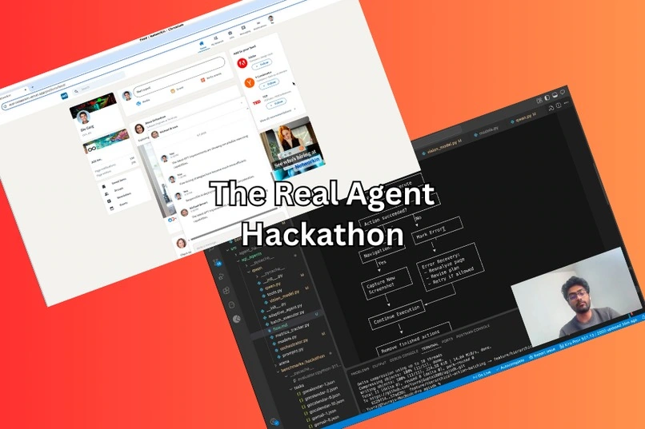

Browser-agent evaluation
REAL Browser Agent Benchmark
A benchmark harness that runs agents against 16 calendar, email, hotel-booking and networking tasks.

Task specification Browser session Outcome check
What counts as a completed task?
An agent can navigate to the right application and still leave a task unfinished. The harness separates the task definition, the agent’s browser session and the evaluator that checks the outcome.


My contribution
I worked on the agent’s reflection loop and iterated on its behavior across calendar, email and networking tasks. The harness gives each task its own browser instance so runs can be evaluated independently.
Competition context
Our team earned second place in the Agent Track of the REAL Agent Challenge. The public repository preserves several experiments, including an orchestrator branch with documented task failures.